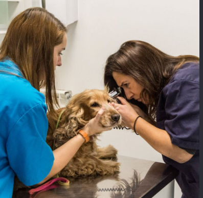

Quiénes somos
En Veterinaria San Marcos cuidamos a tus mascotas con profesionalismo, cariño y la mejor tecnología. Conoce nuestra historia y al equipo que hace posible este proyecto.
Nuestra historia
Veterinaria San Marcos nació con una idea simple pero poderosa: ofrecer atención veterinaria de calidad, cercana y accesible para todas las familias que consideran a sus mascotas parte del hogar.
Desde nuestros inicios nos hemos enfocado en la prevención, el bienestar animal y un trato humano tanto para las mascotas como para sus tutores. Hoy contamos con un equipo multidisciplinario y un catálogo de productos seleccionados para el cuidado diario.
Este sitio web es parte de nuestro compromiso por acercar nuestros servicios y productos a más personas, de forma clara, segura y fácil de usar.

Misión, Visión y Valores
Misión
Brindar atención veterinaria integral y productos de calidad que mejoren la calidad de vida de las mascotas y den tranquilidad a sus familias.
Visión
Ser la veterinaria de referencia en la zona, reconocida por su excelencia profesional, innovación y el cariño con el que tratamos a cada paciente.
Valores
Empatía, profesionalismo, honestidad, respeto por los animales y compromiso con la comunidad.
Nuestro equipo de desarrollo
Este sitio web fue desarrollado como proyecto académico por un equipo de estudiantes comprometidos con crear una experiencia clara, útil y bien diseñada.
Alfonso Pizarro
Módulo Usuarios y Autenticación
Responsable de login, registro y administración de usuarios.
Bruno
Módulo Catálogo y Carrito
Productos, detalle, carrito de compras y administración de productos.
Benjamin Martinez
Módulo Contenido y Contacto
Home, Nosotros, Blogs, Contacto y panel de administración principal.
¿Quieres saber más o agendar una hora?
Estamos para ayudarte a ti y a tu mascota.